Free contemporary art: is there a drawn deck we could just use?
Final experiment. Not museums this time: art made by living illustrators and released under licences that let an open-source game ship it. Searched OpenGameArt, itch.io, DriveThruRPG stock art, open-source game repositories and open webcomics. Card names stay as they are. Same frame as the game.
Candidate A · the only complete cast
Battle for Wesnoth portraits
- Covers the cast All eight ranks, with real characters, and spares for the duplicates.
- Style Painted and stylised, consistent across the set. Closer to a game than a gallery.
- At 56px Good: single figures on transparent backgrounds, high contrast.
- Licence cost Share-alike. The eight card images stay CC BY-SA with credits; the code stays MIT. Workable, but it is the only candidate with that string attached.
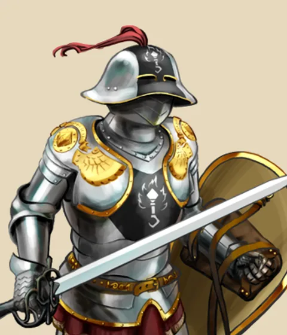
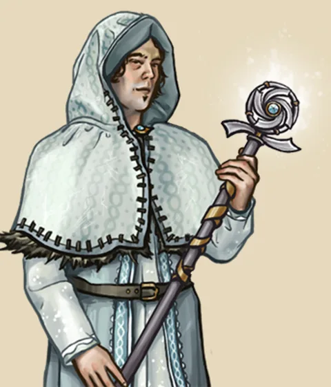
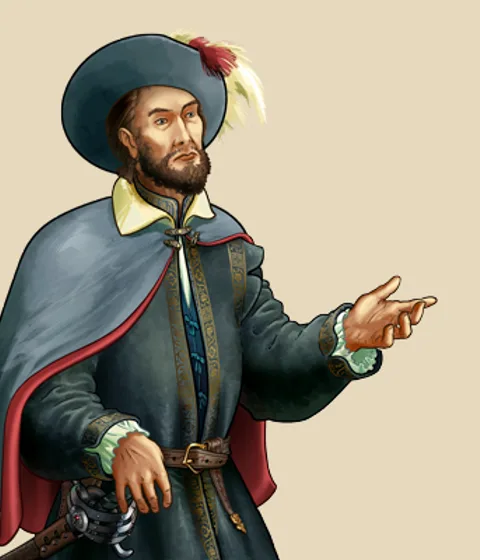
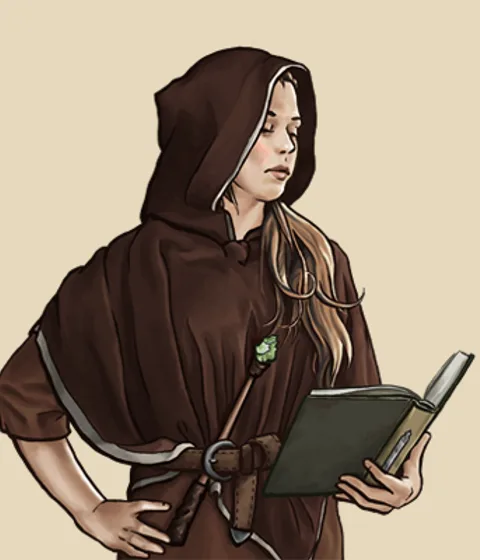
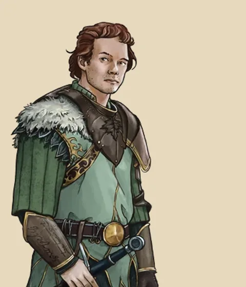
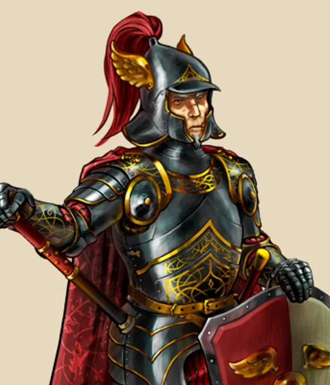
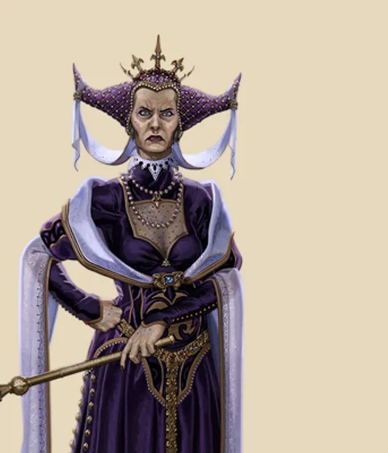
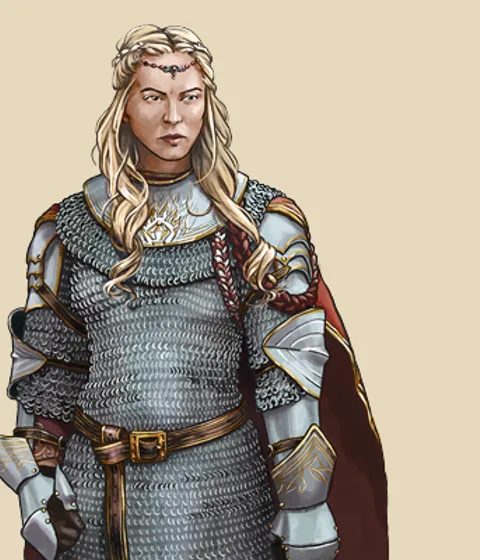
Candidate B · best drawing, wrong cast
David Revoy, Pepper&Carrot
- Covers the cast Princess, maybe Handmaid, maybe Countess. Five cards missing.
- Style Soft digital painting, big eyes, warm light. Charming and clearly one hand.
- At 56px Fine for the portraits, poor for the scenes.
- Licence cost Lowest of all: attribution only.
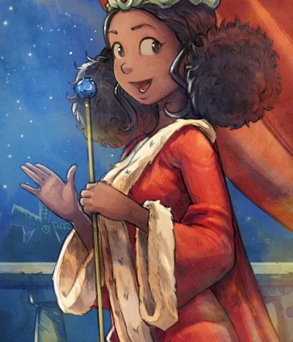
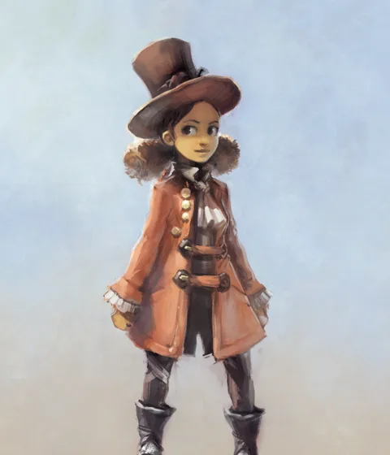
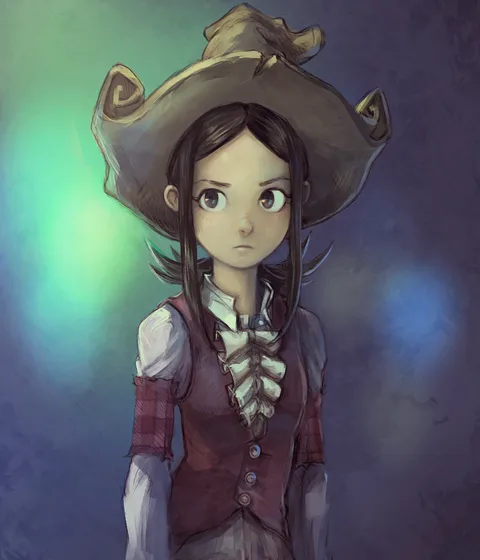
Candidate C · ink, CC0
Duncan Hall, Grimdark Fantasy Characters
- Covers the cast Guard, Baron, maybe King. No women at all.
- Style The best pure drawing in the free pool. Monochrome, so the frame drops its colour band.
- At 56px Weak, like all hatching.
- Licence cost None.
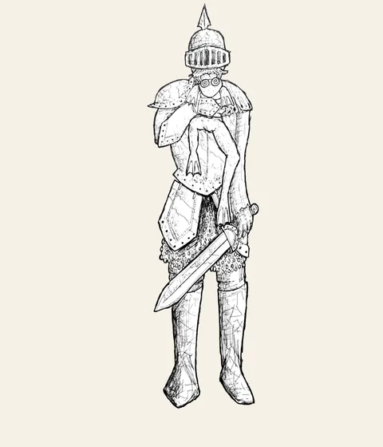
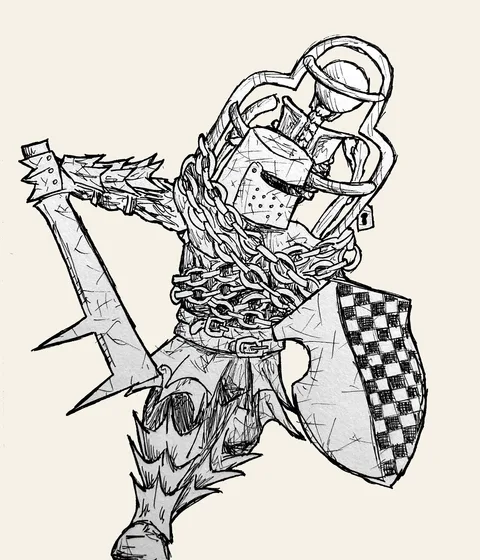
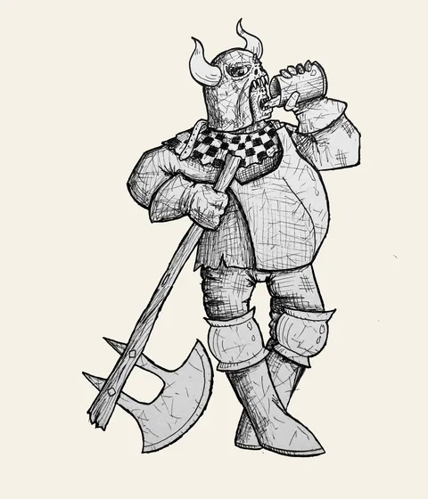
Candidate D · cartoon, public domain
Gordy Higgins, Public Domain Fantasy Art Pack
- Covers the cast None directly. Everyone is an adventurer.
- Style Big-nosed cartoon, heavy outline, group scenes.
- At 56px Good, cartoons survive shrinking.
- Licence cost None.
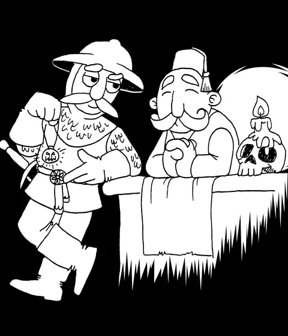
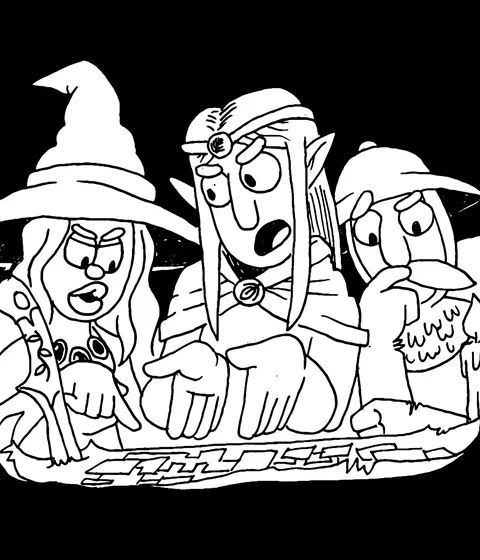
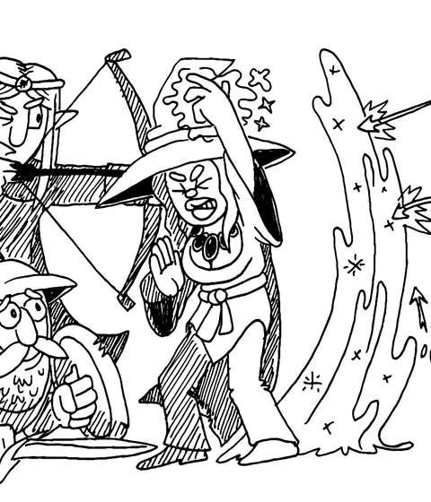
Also looked at, not worth a card
| Source | Licence | Why not |
|---|---|---|
| Ravenmore, Fantasy Portrait Pack (OpenGameArt) | CC BY 3.0 | Seven 256px painted heads of adventurer races. Too small, no court. |
| Justin Nichol, FLARE portrait packs (OpenGameArt) | CC BY-SA 3.0 / GPL | Photoreal painted busts. Realism, which the owner ruled out first. |
| Zeldyn, Priest / Fighter portraits (OpenGameArt) | CC BY 3.0 | Same: realistic painted portraits, single figures only. |
| Morphs, Free Tabletop Art Pack (itch.io) | CC BY 4.0 | Fifteen hand-drawn objects: swords, doors, scrolls. No people. |
| Axebane, Free Fantasy Stock Art (itch.io) | CC BY 4.0 | Seventy-four objects. No people. |
| Levi Gilbert, ArtPack 2022 (itch.io) | CC BY 4.0 | Pen-and-ink plants and rubble. No people. |
| Penflower Ink, character packs (itch.io) | Custom, paid | Good traditional ink adventurers, but paid and under the artist's own terms, not an open licence. |
| orchidrabbit, Fantasy Character Portraits vol. 1 | CC BY 4.0, paid | Seventy-two portraits for $5. Adventurer races. Could be bought, still not a court. |
| OpenGameArt "CC0 Portraits" collection (294 items) | CC0 | Pixel heads, anime faces, sci-fi, photos of paintings. Nothing coherent enough to make a deck. |
| Kim Holm (ink, Norway) | Reported CC BY, unverified | Horror and dream ink; could not confirm a licence page. Not pursued. |
Conclusion
There is no free, drawn, contemporary deck for a Renaissance court. The free pool is dungeon fantasy (adventurers, monsters, loot), realistic painted busts, or objects. The one source with the whole cast is Wesnoth, and taking it would trade the manuscript identity for a generic fantasy one under a share-alike licence.
Two things fell out of the search that are worth keeping. First, Pepper&Carrot shows the model for a future commissioned deck: a living artist, CC BY, high-resolution sources published. Second, the manuscripts remain the only material that is free, coherent across sixteen cards, legible small, and literally about the game's subject. The experiment argues for keeping the Manesse deck.